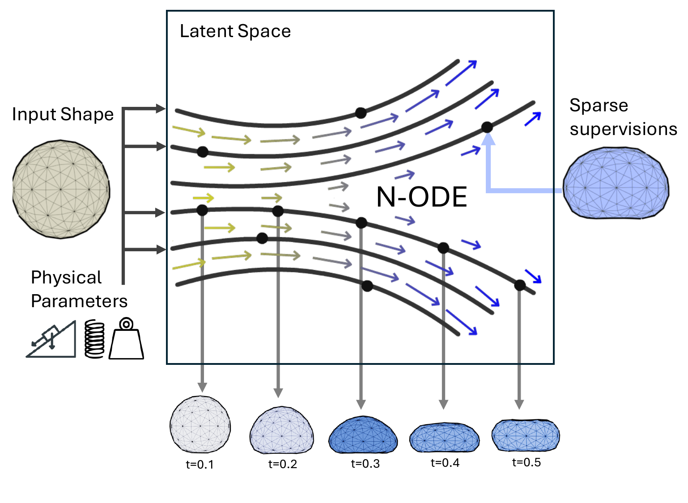
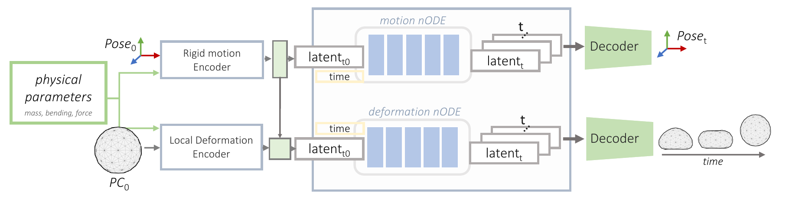
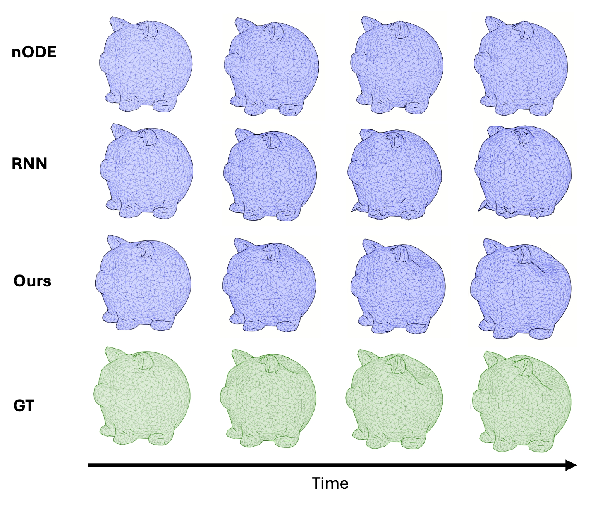
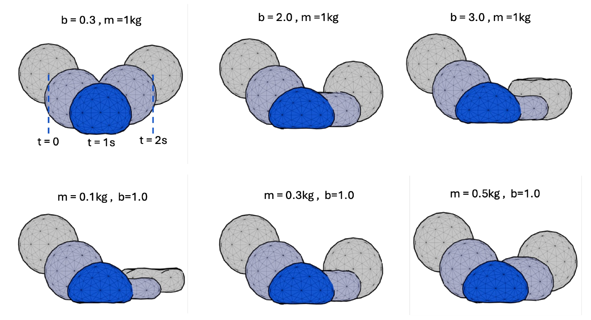
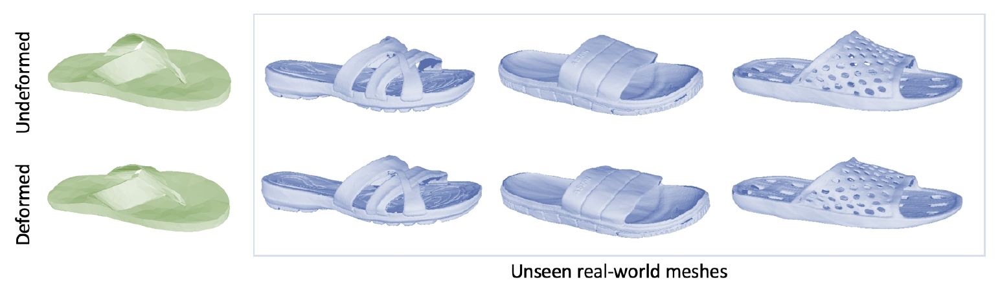
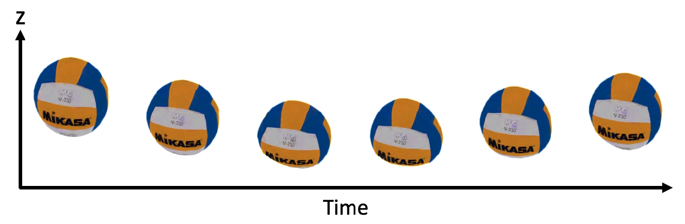

Temporal Interpolation
Train with sparse temporal supervision and evaluate the intervening frames. The paper studies sampling intervals of 3, 5 and 8 frames.
IROS 2026
1 Technical University of Munich2 Munich Center for Machine Learning
ODeform predicts continuous object deformation from an initial point cloud and physical conditions by learning separate latent neural ODEs for global motion and local deformation.
Predicting deformation for an unseen contact condition. Left: ODeform. Right: ground-truth simulation.
Flipflop 5: learned deformation transferred to a reconstructed HouseCAT6D mesh within the same object category.
Modeling continuous object deformation is important for many computer vision and robotics tasks, such as manipulation and simulation. Existing approaches rely on learning-based methods or physics simulators to model shape deformations. However, these approaches either use discrete time steps or are too computationally intensive for real-time applications. We present ODeform, a novel extension of Neural Ordinary Differential Equations to continuous 4D dynamics of deformable objects in 3D space. Our method transforms 3D point clouds and physical conditions (like material properties) into a unified latent space. By solving the resulting ordinary differential equations over time, we model deformations as continuous flows within this learned embedding, eliminating the need for discrete time steps while maintaining computational efficiency. We evaluate our approach on unseen physical parameter configurations, showing improved motion prediction accuracy over baseline methods. Our experiments further demonstrate a successful transfer to real 3D captured objects with novel shapes, along with effective interpolation and extrapolation of the learned dynamics.

Rather than predicting each frame independently, ODeform learns how latent states change. Integrating these dynamics links observed states and enables predictions at intermediate and future times.
Schematic notation follows the paper. See the code for the conditioning and numerical integration details.
Separate global motion from local deformation, then reconstruct their combined effect.

Evaluated on contact interactions and mass-dependent elastic deformation.
| Method | RMSE (mm) ↓ | MAE (mm) ↓ | MSE (mm²) ↓ |
|---|---|---|---|
| Direct nODE | 6.750 | 4.956 | 82.710 |
| RNN | 22.670 | 16.076 | 683.000 |
| PE-GNN | 14.220 | 9.837 | 244.400 |
| ODeform Ours | 6.657 | 5.140 | 58.430 |
| Method | RMSE (mm) ↓ | MAE (mm) ↓ | MSE (mm²) ↓ |
|---|---|---|---|
| Direct nODE | 10.344 | 6.366 | 205.000 |
| RNN | 13.585 | 9.035 | 260.000 |
| ODeform Ours | 1.279 | 0.948 | 2.000 |
ODeform achieves the lowest reported RMSE and MSE in both settings. Direct nODE has the lowest contact MAE. Values are from Table I of the paper.
Train with sparse temporal supervision and evaluate the intervening frames. The paper studies sampling intervals of 3, 5 and 8 frames.
Extend learned dynamics into the future: five additional frames for Contact-Force and ten for Mass-Elastic.
Freeze the learned dynamics and fit mass or bending stiffness to an observed deformation sequence.


Contact-Force: 2,100 interaction sequences across seven object categories.
Mass-Elastic: 500 simulated drops with varying mass and bending stiffness.
Qualitative experiments explore learned deformation on new geometry and 3D representations.

Transfer deformation learned on simulated shapes to reconstructed shoe meshes from HouseCAT6D, within the same object category.

Apply the learned dynamics to a reconstructed volleyball, bringing deformable motion into a captured scene.
@inproceedings{velikova2026odeform,
title = {ODeform: Learning Continuous 4D Motion for Shape
Deformation with Neural ODEs},
author = {Velikova, Yordanka and Saleh, Mahdi and
Kuang, Liming and Busam, Benjamin},
booktitle = {Proceedings of the IEEE/RSJ International Conference on Intelligent Robots and Systems (IROS)},
year = {2026}
}